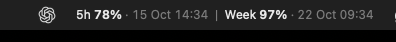

A little more headroom for your Mac
Your allowance.
Always in sight.
Keep your remaining ChatGPT/Codex allowance and exact reset times where you can see them. Five-hour and weekly limits, right in your menu bar.
Free & open source · Native Swift · Built on your Mac

The numbers mean remaining.
The dates tell you exactly when each limit resets.
Actual screenshot · Example account values
Know before you start.
Both percentages and reset dates stay visible. Semibold numbers, quiet dates, and your Mac’s local time.
Let it keep up.
Refreshes every two minutes and after wake. An amber dot at 20% remaining, red at 10%. Failed refreshes are marked stale.
No extra account.
Uses your signed-in ChatGPT/Codex helper. No API key to paste, no developer backend, and no AI turn just to check usage.
SOURCE FIRST. YOUR MAC DOES THE BUILD.
Let ChatGPT/Codex
take it from here.
No DMG. No build system to learn.
Copy this instruction into ChatGPT/Codex on your Mac.
- 1
Copy the prompt. Open ChatGPT/Codex on the Mac where you want the app.
- 2
Let ChatGPT/Codex build and install. Approve local actions as needed. Apple’s tools may require an initial download.
- 3
Find it in your menu bar. Click for refresh controls and optional launch at login.
A FEW PRACTICAL DETAILS
Small app.
Clear expectations.
What do I need?
A Mac, ChatGPT/Codex installed and signed in with ChatGPT, and Apple Command Line Tools with Swift 5.9 or newer. ChatGPT/Codex can help you check these. No full Xcode app, Homebrew, or Apple Developer membership is needed.
The deployment target is macOS 13+. Runtime verified on Apple Silicon with macOS 26; older macOS and Intel Macs have not been runtime-tested. Allow space in your menu bar for the full label.
Can I install it without ChatGPT/Codex doing the work?
Yes. Clone the repository, select a release, and run the installer:
git clone https://github.com/swihpi/codex-usage-menubar.git
cd codex-usage-menubar
git checkout v1.0.1
./script/install.shMissing Apple’s tools? Run xcode-select --install first and finish the macOS installer. See the complete build instructions.
Where do my credentials and data go?
This app does not directly read or copy ChatGPT/Codex credential files. It asks the installed ChatGPT/Codex helper for usage; that helper manages authentication and its own network access. The app adds no analytics or developer backend and saves only its most recent usage snapshot.
The website is hosted on GitHub Pages, which has its own standard service logging.
How do updates and removal work?
Updates are manual: select a newer source release and rerun the installer. To remove it, switch off launch at login, quit the app, and move it from your user Applications folder to the Trash.
Is this an official OpenAI app?
No. ChatGPT/Codex Usage is an independent community project by swihpi, released under the MIT licence. It is not affiliated with, endorsed by, or sponsored by OpenAI. The local ChatGPT/Codex app-server interface can change with future updates.